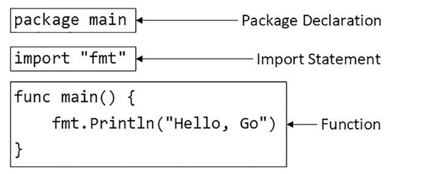
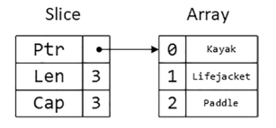
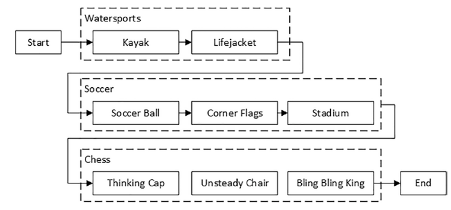
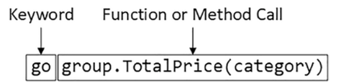
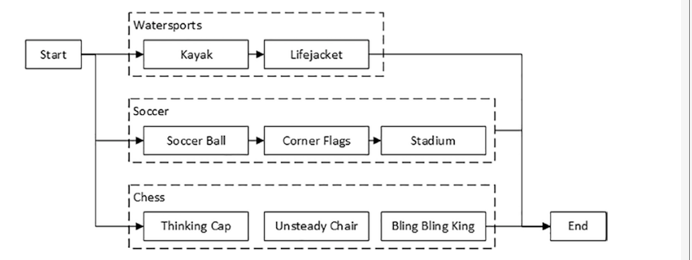

GO Notes
Table of Contents
Introduction
GO programming language notes. Reading Adam Freeman's Pro Go.
get-go
Open a command prompt, navigate to a convenient location, and create a folder named partyinvites. Navigate to the partyinvites folder and run the command shown in Listing 1-2 to start a new Go project.
go mod init partyinvites
The go command is used for almost every development task. This command creates a file named
go.mod, which is used to keep track of the packages a project depends on and can also be
used to publish the project, if required.
Go code files have a .go extension. Use your chosen editor to create a file named main.go in the partyinvites folder with the contents shown in Listing 1-3. If you are using Visual Studio Code and this is your first time editing a Go file, then you will be prompted to install the extensions that support the Go language.
package main
import "fmt"
func main() {
fmt.Println("TODO: add some features")
}
TODO: add some features
The syntax of Go will be familiar if you have used any C or C-like language, such as C# or Java. I describe the Go language in depth in this book, but you can discern a lot just by looking at the keywords and structure of the code.
Features are grouped into packages, which is why there is a package statement in the previous block. Dependencies on packages are made using an import statement, which allows the features they use to be accessed in a code file. Statements are grouped in functions, which are defined with the func keyword. There is one function in the block which is named main. This is the entry point for the application, meaning that this is the point at which execution will begin when the application is compiled and run.
Even though the details may not be familiar, the purpose of the code in the block is easy to figure out: when the application is executed, it will write out a simple message. Run the command shown in the partyinvites folder to compile and execute the project. (Notice that there is a period after the word run in this command.)
go run .
The go run command is useful during development because it performs the compilation and execution tasks in one step. The application produces the following output:
TODO: add some features
Define a Data Type
The next step is to create a custom data type that will represent the RSVP responses, as shown:
type Rsvp struct {
Name, Email, Phone string
WillAttend bool
}
Go allows custom types to be defined and given a name using the type keyword. creates a struct data type named Rsvp. Structs allow a set of related values to be grouped together. The Rsvp struct defines four fields, each of which has a name and a data type. The data types used by the Rsvp fields are string and bool, which are the built-in types for representing a string of characters and Boolean values.
Next, I need to collect Rsvp values together. Later, I explain how to use a database in a Go application, but for this chapter, it will be enough to store the responses in memory, which means that responses will be lost when the application is stopped.
Go has built-in support for fixed-length arrays, variable-length arrays (known as slices), and maps that contain key-value pairs. the following block creates a slice, which is a good choice when the number of values that will be stored isn’t known in advance.
package main
import "fmt"
type Rsvp struct {
Name, Email, Phone string
WillAttend bool
}
var responses = make([]*Rsvp, 0, 10)
func main() {
fmt.Println("TODO: add some features");
}
TODO: add some features
This new statement relies on several Go features, which are most readily understood by starting at the end of the statement and working backwards. Go provides built-in functions for performing common operations on arrays, slices, and maps. One of those functions is make, which is used in to initialize a new slice. The last two arguments to the make function are the initial size and the initial capacity.
I specified zero for the size argument create an empty slice. Slices are resized automatically as new items are added, and the initial capacity determines how many items can be added before the slice has to be resized. In this case, ten items can be added to the slice before it has to be resized.
The square brackets, [], denote a slice. The asterisk, *, denotes a pointer. The Rsvp part
of the type denotes the struct type defined in Listing 1-6. Put together, []*Rsvp denotes a
slice of pointers to instances of the Rsvp struct.
You may have flinched at the term pointer if you have arrived at Go from C# or Java, which do not allow pointers to be used directly. But you can relax because Go doesn’t allow the types of operations on pointers that can get a developer into trouble. The use of pointers in Go determines only whether a value is copied when it is used. By specifying that my slice will contain pointers, I am telling Go not to create copies of my Rsvp values when I add them to the slice.
The var keyword indicates that I am defining a new variable, which is given the name responses. The equal sign, =, is the Go assignment operator and sets the value of the responses variable to the newly created slice. I don’t have to specify the type of the responses variable because the Go compiler will infer it from the value that is assigned to it.
Using The Go Tools
The go command provides access to all the features needed to compile and execute Go code and is used throughout this book. The argument used with the go command specifies the operation that will be performed, such as the run argument which compiles and executes Go source code. The Go command supports a large number of arguments; the following table describes the most useful ones
| Argument | Description |
|---|---|
build |
The go build command compiles the source code in the current directory and generates an executable file, as described in the “Compiling and Running Source Code” section. |
clean |
The go clean command removes the output produced by the go build command, including the executable and any temporary files that were created during the build, as described in the “Compiling and Running Source Code” section. |
doc |
The go doc command generates documentation from source code. See the “Linting Go Code” section for a simple example. |
fmt |
The go fmt command ensures consistent indentation and alignment in source code files, as described in the “Formatting Go Code” section. |
get |
The go get command downloads and installs external packages |
install |
The go install command downloads packages and is usually used to install tool packages |
help |
The go help command displays help information for other Go features |
test |
The go test command executes unit tests |
version |
The go version command writes out the Go version number. |
vet |
The go vet command detects common problems in Go code |
Creating a Go Project
Go projects don’t have an elaborate structure and are quick to set up. Open a new command prompt and create a folder named tools in a convenient location. Add a file named main.go to the tools folder with the content shown:
package main
import "fmt"
func main() {
fmt.Println("Hello, Go")
}
Hello, Go
The following figure illustrates the key elements in the main.go file

The first statement is the package declaration. Packages are used to group related features, and every code file has to declare the package to which its contents belong. The package declaration uses the package keyword, followed by the name of the package.
The next statement is the import statement, which is used to declare dependencies on other packages. The import keyword is followed by the name of the package, which is enclosed in double quotes, as shown. The import statement specifies a package named fmt, which is the built-in Go package for reading and writing formatted strings. Check all the built-in packages here: https://pkg.go.dev/std
The remaining statements in the main.go file define a function named main. When you define a function named main in a package named main, you create an entry point, which is where execution begins in a command-line application
Semicolons and Errors in Go Code
You may have noticed that I didn't append a semicolon in the previous code. Go has an unusual approach to semicolons: they are required to terminate code statements, but they are not required in source code files. Instead, the Go build tools figure out where the semicolons need to go as they process files, acting as though they had been added by the developer.
The result is that semicolons can be used in Go source code files but are not required and are conventionally omitted.
Some oddities arise if you don’t follow the expected Go code style. For example, you will receive compiler errors if you attempt to put the opening brace for a function or for loop on the next line, like this:
package main
import "fmt"
func main() {
fmt.Println("Hello, Go")
}
Hello, Go
The errors report an unexpected semicolon and a missing function body. This is because the Go tools have automatically inserted a semicolon like this:
package main
import "fmt"
func main() {
fmt.Println("Hello, Go")
}
Hello, Go
The error messages make more sense when you understand why they arise, although it can be hard to adjust to the expected code format if this is your preferred brace placement.
I have tried to follow the no-semicolon convention throughout this book, but I have been writing code in languages that require semicolons for decades, so you may find the occasional example where I have added semicolons purely by habit. The go fmt command will remove semicolons and adjust other formatting issues.
Defining a Module
The previous section demonstrated that you can get `tarted just by creating a code file, but a more common approach is to create a Go module, which is the conventional first step when starting a new project. Creating a Go module allows a project to easily consume third-party packages and can simplify the build process.
go mod init tool
This command adds a file named go.mod to the tools folder. The reason that most projects start with the go mod init command is that it simplifies the build process. Instead of specifying a particular code file, the project can be built and executed using a period, indicating the project in the current directory.
Linting Go Code
A linter is a tool that checks code files using a set of rules that describe problems that cause confusion, produce unexpected results, or reduce the readability of the code. The most widely used linter for Go is called golint, which applies rules taken from two sources. The first is the Effective Go document produced by Google (https://golang.org/doc/effective_go.html), which provides tips for writing clear and concise Go code. The second source is a collection of comments from code reviews (https://github.com/golang/go/wiki/CodeReviewComments).
The problem with golint is that it provides no configuration options and will always apply all the rules, which can result in warnings you care about being lost in a long list of warnings for rules you don’t care about. I prefer to use the revive linter package, which is a direct replacement for golint but with support for controlling which rules are applied. To install the revive package, open a new command prompt and run the command shown:
go install github.com/mgechev/revive@latest
- On Linting
Linters can be a powerful tool for good, especially in a development team with mixed levels of skill and experience. Linters can detect common problems and subtle errors that lead to unexpected behavior or long-term maintenance issues. I like this kind of linting, and I like to run my code through the linting process after I have completed a major application feature or before I commit my code into version control.
But linters can also be a tool of division and strife when rules are used to enforce one developer’s personal preferences across an entire team. This is usually done under the banner of being “opinionated.” The logic is that developers spend too much time arguing about different coding styles, and everyone is better off being forced to write in the same way.
My experience is that developers will just find something else to argue about and that forcing a code style is often just an excuse to make one person’s preferences mandatory for an entire development team.
My advice is to use linting sparingly and focus on the issues that will cause real problems. Give individual developers the freedom to express themselves naturally and focus only on issues that have a discernible impact on the project. This is counter to the opinionated ethos of Go, but my view is that productivity is not achieved by slavishly enforcing arbitrary rules, however well-intentioned they may be.
- Using the Linter
The main.go file is so simple that it doesn’t have any problems for the linter to highlight. Add the following statements, which are legal Go code that does not comply with the rules applied by the linter.
package main import "fmt" func main() { PrintHello() for i := 0; i < 5; i++ { PrintNumber(i) } } func PrintHello() { fmt.Print("Hello, Go") } func PrintNumber(number int) { fmt.Print(number) }Hello, Go01234
main.go:12:1: exported function PrintHello should have comment or be unexported main.go:16:1: exported function PrintNumber should have comment or be unexported
functions whose names start with an uppercase letter are said to be exported and available for use outside of the package in which they are defined. The convention for exported functions is to provide a descriptive comment. The linter has flagged the fact that no comments exist for the PrintHello and PrintNumber functions.
package main import "fmt" func main() { PrintHello() for i := 0; i < 5; i++ { PrintNumber(i) } } // PrintHello Does staff func PrintHello() { fmt.Print("Hello, Go") } // PrintNumber does staff func PrintNumber(number int) { fmt.Print(number) }Hello, Go01234
- Disabling Linter Rules
The revive package can be configured using comments in code files, disabling one or more rules for sections of code. I have used comments to disable the rule that causes the warning for the
PrintNumberfunction.package main import "fmt" func main() { PrintHello() for i := 0; i < 5; i++ { PrintNumber(i) } } // revive:disable:exported func PrintHello() { fmt.Print("Hello, Go") } // revive:enable:exported func PrintNumber(number int) { fmt.Print(number) }Hello, Go01234
The syntax required to control the linter is revive, followed by a colon, enable or disable, and optionally another colon and the name of a linter rule. So, for example, the
revive:disable:exportedcomment prevents the linter from enforcing a rule named exported, which is the rule that has been generating warnings. Therevive:enable:exportedcomment enables the rule so that it will be applied to subsequent statements in the code file.Using code comments is helpful when you want to suppress warnings for a specific region of code but still apply the rule elsewhere in the project. If you don’t want to apply a rule at all, then you can use a TOML- format configuration file. Add a file named revive.toml to the tools folder with the content shown:
ignoreGeneratedHeader = false severity = "warning" confidence = 0.8 errorCode = 0 warningCode = 0 [rule.blank-imports] [rule.context-as-argument] [rule.context-keys-type] [rule.dot-imports] [rule.error-return] [rule.error-strings] [rule.error-naming] #[rule.exported] [rule.if-return] [rule.increment-decrement] [rule.var-naming] [rule.var-declaration] [rule.package-comments] [rule.range] [rule.receiver-naming] [rule.time-naming] [rule.unexported-return] [rule.indent-error-flow] [rule.errorf]
This is the default revive configuration described at https://github.com/mgechev/revive#recommended-%C2%ADconfiguration, except that I have put a # character before the entry that enables the exported rule.
Fixing Common Problems in Go
The go vet command identifies statements likely to be mistakes. Unlike a linter, which will often focus on style issues, the go vet command finds code that compiles but that probably won’t do what the developer intended.
I like the go vet command because it spots errors that other tools miss, although the analyzers don’t spot every mistake and will sometimes highlight code that isn’t a problem.
Look at the following example:
package main
import "fmt"
func main() {
PrintHello()
for i := 0; i < 5; i++ {
i = i
PrintNumber(i)
}
}
func PrintHello() {
fmt.Print("Hello, Go")
}
func PrintNumber(number int) {
fmt.Print(number)
}
Hello, Go01234
The new statement assigns the variable i to itself, which is allowed by the Go compiler but is likely to be a mistake. To analyze the code, use the command prompt to run the command:
go vet main.go
# party .\main.go:8:3: self-assignment of i to i
The warnings produced by the go vet command specify the location in the code where a problem has been detected and provide a description of the issue.
The go vet command applies multiple analyzers to code, and you can see the list of analyzers at https://golang.org/cmd/vet. You can select individual analyzers to enable or disable, but it can be difficult to know which analyzer has generated a specific message. To figure out which analyzer is responsible for a warning, run the command:
go vet -json .
# party
{
"party": {
"assign": [
{
"posn": "E:\\leet\\go\\DummyPrograms\\main.go:8:3",
"message": "self-assignment of i to i"
}
]
}
}
Types, Values, Pointers
The folloing table puts the basic Go features in context.
| Problem | Solution |
|---|---|
| Use a value directly | Use a literal value |
| Define a constant | Use the const keyword |
| Define a constant that can ve converted to a related data type | Create an untyped constant |
| Define a variable | Use the var keyword or the short declaration syntax |
| Prevent compiler errors for an unused variable | Use the blank identifier |
| Define a pointer | User the address operator |
| Follow a pointer | Use an asterisk with the pointer variable name |
I've created this new main file:
package main
import (
"fmt"
"math/rand"
)
func main() {
fmt.Println(rand.Int())
}
The code in the main.go file will be compiled and executed, producing the following output:
5577006791947779410
The output from the code will always be the same value.
Basic Data Types
Go provides a set of basic data types, which are described in the table. These types are the foundation of Go development, and many of the characteristics of these types will be familiar from other languages.
| Name | Description |
|---|---|
int |
This type represents a whole number, which can be positive or negative. The int type size is platform-dependent and will be either 32 or 64 bits. There are also integer types that have a specific size, such as int8, int16, int32, and int64, but the int type should be used unless you need a specific size. |
uint |
This type represents a positive whole number. The uint type size is platform- dependent and will be either 32 or 64 bits. There are also unsigned integer types that have a specific size, such as uint8, uint16, uint32, and uint64, but the uint type should be used unless you need a specific size. |
byte |
This type is an alias for uint8 and is typically used to represent a byte of data. |
float32, float64 |
These types represent numbers with a fraction. These types allocate 32 or 64 bits to store the value. |
complex64, complex128 |
These types represent numbers that have real and imaginary components. These types allocate 64 or 128 bits to store the value. |
bool |
This type represents a Boolean truth with the values true and false. |
string |
This type represents a sequence of characters |
rune |
This type represents a single Unicode code point. Unicode is complicated, but—loosely—this is the representation of a single character. The rune type is an alias for int32. |
Constants are names for specific values, which allows them to be used repeatedly and consistently. There are two ways to define constants in Go: typed constants and untyped constants. This is an example of typed constants:
package main
import (
"fmt"
//"math/rand"
)
func main() {
const price float32 = 275.00
const tax float32 = 27.50
const quantity int = 2
fmt.Println("Total:", quantity * (price + tax))
}
The difference between typed and untyped constants is that, and since go has a very strict rules about type conversions, untyped will have some kind of conversions. The above code should gives the following error:
.\main.go:12:26: invalid operation: quantity * (price + tax) (mismatched types int and float32)
package main
import (
"fmt"
//"math/rand"
)
func main() {
const price float32 = 275.00
const tax float32 = 27.50
const quantity = 2
fmt.Println("Total:", quantity * (price + tax))
}
Omitting the type when defining the quantity constant tells the Go compiler that it should be more flexible about the constant’s type. When the expression passed to the fmt.Println function is evaluated, the Go compiler will convert the quantity value to a float32. Compile and execute the code, and you will receive the following output:
Total: 605
Untyped constants will be converted only if the value can be represented in the target type. In practice, this means you can mix untyped integer and floating-point numeric values, but conversions between other data types must be done explicitly.
package main
import (
"fmt"
//"math/rand"
)
func main() {
const price, tax float32 = 275, 27.50
const quantity, inStock = 2, true
fmt.Println("Total:", quantity * (price + tax))
fmt.Println("In stock: ", inStock)
}
The const keyword is followed by a comma-separated list of names, an equal sign, and a comma separated list of values.
Untyped constants may seem like an odd feature, but they make working with Go a lot easier, and you will find yourself relying on this feature, often without realizing, because literal values are untyped constants, which means that you can use literal values in expressions and rely on the compiler to deal with mismatched types, as shown:
package main
import (
"fmt"
//"math/rand"
)
func main() {
const price, tax float32 = 275, 27.50
const quantity, inStock = 2, true
fmt.Println("Total:", 2 * quantity * (price + tax))
fmt.Println("In stock: ", inStock)
}
Variables
Variables are defined using the var keyword, and, unlike constants, the value assigned to a variable can be changed, as shown:
package main
import "fmt"
func main() {
var price float32 = 275.00
var tax float32 = 27.50
fmt.Println(price + tax)
price = 300
fmt.Println(price + tax)
}
Variables are declared using the var keyword, a name, a type, and a value assignment, as illustrated:
package main
import "fmt"
func main() {
var price float32 = 275.00
var tax float32 = 27.50
fmt.Println(price + tax)
price = 300
fmt.Println(price + tax)
}
The Go compiler can infer the type of variables based on the initial value, which allows the type to be omitted:
package main
import "fmt"
func main() {
var price = 275.00
var price2 = price
fmt.Println(price)
fmt.Println(price2)
}
- Short Variable Declaration Syntax
The short variable declaration provides a shorthand for declaring variables, as shown:
package main import "fmt" func main() { price := 275.00 fmt.Println(price) }Multiple variables can be defined with a single statement by creating comma-separated lists of names and values, as shown:
package main import "fmt" func main() { price, tax, inStock := 275.00, 27.50, true fmt.Println("Total:", price + tax) fmt.Println("In stock:", inStock) }Go doesn’t usually allow variables to be redefined but makes a limited exception when the short syntax is used. To demonstrate the default behavior, the following block uses the var keyword to define a variable that has the same name as one that already exists within the same function
package main import "fmt" func main() { price, tax, inStock := 275.00, 27.50, true fmt.Println("Total:", price + tax) fmt.Println("In stock:", inStock) var price2, tax = 200.00, 25.00 fmt.Println("Total 2:", price2 + tax) }This gives:
.\main.go:10:17: tax redeclared in this block
However, redefining a variable is allowed if the short syntax is used, as shown as long as at least one of the other variables being defined doesn’t already exist and the type of the variable doesn’t change.
package main import "fmt" func main() { price, tax, inStock := 275.00, 27.50, true fmt.Println("Total:", price + tax) fmt.Println("In stock:", inStock) price2, tax := 200.00, 25.00 fmt.Println("Total 2:", price2 + tax) } - Blank Declaration
It is illegal in Go to define a variable and not use it:
price, tax, inStock, discount := 275.00, 27.50, true, true var salesPerson = "Alice" fmt.Println("Total:", price + tax) fmt.Println("In stock:", inStock).\main.go:6:26: discount declared but not used .\main.go:7:9: salesPerson declared but not used
One way to resolve this problem is to remove the unused variables, but this isn’t always possible. For these situations, Go provides the blank identifier, which is used to denote a value that won’t be used, as shown:
package main import "fmt" func main() { price, tax, inStock, _ := 275.00, 27.50, true, true var _ = "Alice" fmt.Println("Total:", price + tax) fmt.Println("In stock:", inStock) }It can be also used to ignore function return values:
package main import ( "fmt" ) func main() { price4, _, _ := f() fmt.Println(price4) } func f() (int, int, int) { return 42, 53, 5 }
Pointers
Pointers are often misunderstood, especially if you have come to Go from a language such as Java or C#, where pointers are used behind the scenes but carefully hidden from the developer. To understand how pointers work, the best place to start is understanding what Go does when pointers are not used, as shown:
package main
import "fmt"
func main() {
first := 100
second := first;
first++
fmt.Println("First:", first)
fmt.Println("Second:", second)
}
The previous code creates two variables. The value of the variable named first is set using a string literal. The value of the variable named second is set using the first value.
Go copies the current value of first when creating second, after which these variables are independent of one another. Each variable is a reference to a separate memory location where its value is stored
When I use the ++ operator to increment the first variable, Go reads the value at the memory location associated with the variable, increments the value, and stores it at the same memory location. The value assigned to the second variable remains the same because the change affects only the value stored by the first variable.
Pointers have a bad reputation because of pointer arithmetic. Pointers store memory locations as numeric values, which means they can be manipulated using arithmetic operators, providing access to other memory locations. You can start with a location that points to an int value, for example; increment the value by the number of bits used to store an int; and read the adjacent value. This can be useful but can cause unexpected results, such as trying to access the wrong location or a location outside of the memory allocated to the program.
- Some Operators
Go doesn’t allow types to be mixed in operations and will not automatically convert types, except in the case of untyped constants. To show how the compiler responds to mixed data types, Following contains a statement that applies the addition operator to values of different types.
package main import ( "fmt" // "math" ) func main() { kayak := 275 soccerBall := 19.50 total := kayak + soccerBall fmt.Println(total) }The literal values used to define the kayak and soccerBall variables result in an int value and a float64 value, which are then used in the addition operation to set the value of the total variable. When the code is compiled, the following error will be reported:
.\main.go:13:20: invalid operation: kayak + soccerBall (mismatched types int and float64)For such a simple example, I could simply change the literal value used to initialize the kayak variable to 275.00, which would produce a float64 variable. But types are rarely as easy to change in real projects, which is why Go provides the features described in the sections that follow.
package main import ( "fmt" //math" ) func main() { kayak := 275 soccerBall := 19.50 total := float64(kayak) + soccerBall fmt.Println(total) }Explicit conversions can be used only when the value can be represented in the target type. This means you can convert between numeric types and between strings and runes, but other combinations, such as converting int values to bool values, are not supported.
Flow Control
The flow of execution in a Go application is simple to understand, especially when the application is as simple as the example. The statements defined in the special main function, known as the application’s entry point, are executed in the order in which they are defined. Once these statements have all been executed, the application exits. Example:
import "fmt"
func main() {
kayakPrice := 275.00
if kayakPrice > 100 {
fmt.Println("Price is greater than 100")
}
}
Price is greater than 100
Go allows an if statement to use an initialization statement, which is executed before the if statement’s expression is evaluated. The initialization statement is restricted to a Go simple statement, which means—in broad terms—that the statement can define a new variable, assign a new value to an existing variable, or invoke a function
import (
"fmt"
"strconv"
)
func main() {
priceString := "275"
if kayakPrice, err := strconv.Atoi(priceString); err == nil {
fmt.Println("Price:", kayakPrice)
} else {
fmt.Println("Error:", err)
}
}
Price: 275
Collection Types
Go arrays are a fixed length and contain elements of a single type, which are accessed by index,
package main
import "fmt"
func main() {
var names [3]string
names[0] = "Kayak"
names[1] = "Lifejacket"
names[2] = "Paddle"
fmt.Println(names)
}
Array types include the size of the array in square brackets, followed by the type of element that the array will contain, known as the underlying type.The length and element type of an array cannot be changed, and the array length must be specified as a constant. (Slices store a variable number of values.)
Arrays can be defined and populated in a single statement using the literal syntax:
package main
import "fmt"
func main() {
names := [3]string { "Kayak", "Lifejacket", "Paddle" }
fmt.Println(names)
}
When using the literal syntax, the compiler can infer the length of the array from the list of elements, like this:
names := [...]string { "Kayak", "Lifejacket", "Paddle" }
The explicit length is replaced with three periods (…), which tells the compiler to determine the array length from the literal values. The type of the names variable is still [3]string, and the only difference is that you can add or remove literal values without also having to update the explicitly specified length. I don’t use this feature for the examples in this book because I want to make the types used as clear as possible.
Arrays are enumerated using the for and range keywords:
package main
import (
"fmt"
)
func main() {
names := [2][2]string{{"QW", "wQ"}, {"WQ", "WQ"}}
for i, v := range names {
fmt.Println("I", i)
fmt.Println("V", v)
}
}
Slices
The best way to think of slices is as a variable-length array because they are useful when you don’t know how many values you need to store or when the number changes over time. One way to define a slice is to use the built-in make function
package main
import "fmt"
func main() {
names := make([]string, 3)
names[0] = "Kayak"
names[1] = "Lifejacket"
names[2] = "Paddle"
fmt.Println(names)
}
The slice type in this example is []string, which denotes a slice that holds string values.
The length is not part of the slice type because the size of slices can vary, as I
demonstrate later in this section. Slices can also be created using a literal syntax
The slice type in this example is []string, which denotes a slice that holds string
values. The length is not part of the slice type because the size of slices can vary, as I
demonstrate later in this section. Slices can also be created using a literal syntax, as
shown:
package main
import "fmt"
func main() {
names := []string {"Kayak", "Lifejacket", "Paddle"}
fmt.Println(names)
}
The combination of the slice type and the length is used to create an array, which acts as the data store for the slice. The slice is a data structure that contains three values: a pointer to the array, the length of the slice, and the capacity of the slice. The length of the slice is the number of elements that it can store, and the capacity is the number of elements that can be stored in the array. In this example, the length and the capacity are both 3:

package main
import "fmt"
func main() {
names := []string {"Kayak", "Lifejacket", "Paddle"}
names = append(names, "Hat", "Gloves")
fmt.Println(names)
}
Creating and copying arrays can be inefficient. If you expect that you will need to append items to a slice, you can specify additional capacity when using the make function:
package main
import "fmt"
func main() {
names := make([]string, 3, 6)
names[0] = "Kayak"
names[1] = "Lifejacket"
names[2] = "Paddle"
fmt.Println("len:", len(names))
fmt.Println("cap:", cap(names))
}
As noted earlier, slices have a length and a capacity. The length of a slice is how many values it can currently contain, while the number of elements that can be stored in the underlying array before the slice must be resized and a new array created. The capacity will always be at least the length but can be larger if additional capacity has been allocated with the make function. The call to the make function creates a slice with a length of 3 and a capacity of 6.
Slices can be created using existing arrays, which builds on the behavior described in earlier examples and emphasizes the nature of slices as views onto arrays
package main
import "fmt"
func main() {
products := [4]string { "Shblanga", "Lifejacket", "Paddle", "Hat"}
someNames := products[2:4]
allNames := products[:]
fmt.Println("someNames:", someNames)
fmt.Println("allNames", allNames)
}
12 someNames: [Paddle Hat] allNames [Shblanga Lifejacket Paddle Hat]
- The Copy Function
package main import "fmt" func main() { products := [4]string { "Kayak", "Lifejacket", "Paddle", "Hat"} allNames := products[1:] someNames := make([]string, 2) copy(someNames, allNames) fmt.Println("someNames:", someNames) fmt.Println("allNames", allNames) }someNames: [Lifejacket Paddle] allNames [Lifejacket Paddle Hat]
Functions
Functions are groups of statements that can be used and reused as a single action. To get started define a simple function:
package main
import "fmt"
func printPrice() {
kayakPrice := 275.00
kayakTax := kayakPrice * 0.2
fmt.Println("Price:", kayakPrice, "Tax:", kayakTax)
}
func main() {
fmt.Println("About to call function")
printPrice()
fmt.Println("Function complete")
}
About to call function Price: 275 Tax: 55 Function complete
defer
The defer keyword is used to schedule a function call that will be performed immediately before the current function returns, as shown
package main
import "fmt"
func calcTotalPrice(products map[string]float64) (count int, total float64){
fmt.Println("Function started")
defer fmt.Println("First defer call")
count = len(products)
for _, price := range products {
total += price
}
defer fmt.Println("Second defer call")
fmt.Println("Function about to return")
return
}
func main() {
products := map[string]float64 {
"Kayak" : 275,
"Lifejacket": 48.95,
}
_, total := calcTotalPrice(products)
fmt.Println("Total:", total)
}
Function started Function about to return Second defer call First defer call Total: 323.95
Struct
Custom data types are defined using the Go structs feature:
package main
import "fmt"
func main() {
type Product struct {
name, category string
price float64
}
kayak := Product {
name: "Kayak",
category: "Watersports",
price: 275,
}
fmt.Println(kayak.name, kayak.category, kayak.price)
kayak.price = 300
fmt.Println("Changed price:", kayak.price)
}
Kayak Watersports 275 Changed price: 300
Go doesn’t differentiate between structs and classes, in the way that other languages do. All custom data types are defined as structs, and the decision to pass them by reference or by value is made depending on whether a pointer is used. As I explained in Chapter 4, this achieves the same effect as having separate type categories but with the additional flexibility of allowing the choice to be made every time a value is used. It does, however, require more diligence from the programmer, who must think through the consequences of that choice during coding. Neither approach is better, and the results are essentially the same.
TODO Interfaces
Packages
The first step for all the example projects in this book has been to create a module file, which was done with the command:
go mod init <name>
The original purpose of a module file was to enable code to be published so that it can be used in other projects and, potentially, by other developers. Module files are still used for this purpose, but Go has started to gain mainstream development, and as this has happened, the percentage of projects that are published has fallen. These days, the most common reason for creating a module file is that it makes it easy to install packages that have been published and has the bonus effect of allowing the use of the run command rather than having to provide the Go build tools with a list of individual files to compile.
That command created a file named go.mod in the packages folder, with the following content:
module pkg go 1.18
The module statement specifies the name of the module, which was specified by the command in. This name is important because it is used to import features from other packages created within the same project and third-party packages, as later examples will demonstrate. The go statement specifies the version of Go that is used, which is 1.17 for this book.
Packages make it possible to add structure to a project so that related features are grouped together. Create the packages/store folder and add to it a file named product.go, with the contents shown in:
package store
type Product struct {
Name, Category string
price int
}
And use it in your main:
package main
import (
"fmt"
"packges/store"
)
func main() {
pr := store.Product{
Name: "o",
Category: "fr",
}
fmt.Print(pr)
}
{o fr 0}
Packages can contain multiple code files, and to simplify development, access control rules and package prefixes do not apply when accessing features defined in the same package. Add a file named tax.go to the store folder with the contents shown:
package store
const defaultTaxRate float64 = 0.2
const minThreshold = 10
type taxRate struct {
rate, threshold float64
}
func newTaxRate(rate, threshold float64) *taxRate {
if (rate == 0) {
rate = defaultTaxRate
}
if (threshold < minThreshold) {
threshold = minThreshold
}
return &taxRate { rate, threshold }
}
func (taxRate *taxRate) calcTax(product *Product) float64 {
if (product.price > taxRate.threshold) {
return product.price + (product.price * taxRate.rate)
}
return product.price
}
All the features defined in the tax.go file are unexported, which means they can be used only within the store package. Notice that the calcTax method can access the price field of the Product type and that it does so without having to refer to the type as store.Product because it is in the same package:
...
func (taxRate *taxRate) calcTax(product *Product) float64 {
if (product.price > taxRate.threshold) {
return product.price + (product.price * taxRate.rate)
}
return product.price
}
...
Package Conflicts
When a package is imported, the combination of the module name and package name ensures that the package is uniquely identified. But only the package name is used when accessing the features provided by the package, which can lead to conflicts. To see how this problem arises, create the packages/fmt folder and add to it a file named formats.go with the code shown:
package fmt
import "strconv"
func ToCurrency(amount float64) string {
return "$" + strconv.FormatFloat(amount, 'f', 2, 64)
}
This will never compile:
go run . # packges ./main.go:5:2: fmt redeclared in this block ./main.go:4:2: other declaration of fmt ./main.go:5:2: imported and not used: "packges/fmt"
One way to deal with package name conflicts is to use an alias, which allows a package to be accessed using a different name, as shown:
package main
import (
"fmt"
"packages/store"
currencyFmt "packages/fmt"
)
func main() {
product := store.NewProduct("Kayak", "Watersports", 279)
fmt.Println("Name:", product.Name)
fmt.Println("Category:", product.Category)
fmt.Println("Price:", currencyFmt.ToCurrency(product.Price()))
}
There is a special alias, known as the dot import, that allows a package’s features to be used without using a prefix, as shown:
import (
"fmt"
"packages/store"
. "packages/fmt"
)
func main() {
product := store.NewProduct("Kayak", "Watersports", 279)
fmt.Println("Name:", product.Name)
fmt.Println("Category:", product.Category)
fmt.Println("Price:", ToCurrency(product.Price()))
}
Package Initialization
Each code file can contain an initialization function that is executed only when all packages have been loaded and all other initialization—such as defining constants and variables—has been done. The most common use for initialization functions is to perform calculations that are difficult to perform or that require duplication to perform, as shown:
package store
const defaultTaxRate float64 = 0.2
const minThreshold = 10
var categoryMaxPrices = map[string]float64 {
"Watersports": 250 + (250 * defaultTaxRate),
"Soccer": 150 + (150 * defaultTaxRate),
"Chess": 50 + (50 * defaultTaxRate),
}
type taxRate struct {
rate, threshold float64
}
func newTaxRate(rate, threshold float64) *taxRate {
if (rate == 0) {
rate = defaultTaxRate
}
if (threshold < minThreshold) {
threshold = minThreshold
}
return &taxRate { rate, threshold }
}
func (taxRate *taxRate) calcTax(product *Product) (price float64) {
if (product.price > taxRate.threshold) {
price = product.price + (product.price * taxRate.rate)
} else {
price = product.price
}
if max, ok := categoryMaxPrices[product.Category]; ok && price > max {
price = max
}
return
}
- Import Package For Intialization
Go prevents packages from being imported but not used, which can be a problem if you rely on the effect of an initialization function but don’t need to use any of the features the package exports. Create the packages/ data folder and add to it a file named data.go.
package data import "fmt" func init() { fmt.Println(("data.go init function invoked")) } func GetData() []string { return []string {"Kayak", "Lifejacket", "Paddle", "Soccer Ball"} }The initialization function writes out a message when it is invoked for the purposes of this example. If I need the effect of the initialization function, but I don’t need to use the GetData function the package exports, then I can import the package using the blank identifier as an alias for the package name, as shown
package main import ( "fmt" "packages/store" . "packages/fmt" "packages/store/cart" _ "packages/data" ) func main() { product := store.NewProduct("Kayak", "Watersports", 279) cart := cart.Cart { CustomerName: "Alice", Products: []store.Product{ *product }, } fmt.Println("Name:", cart.CustomerName) fmt.Println("Total:", ToCurrency(cart.GetTotal())) }
Interface Composition
If you are used to languages such as C# or Java, then you will have created a base class and created subclasses to add more specific features. The subclasses inherit functionality from the base class, which prevents code duplication. The result is a set of classes, where the base class defines common functionality that is supplemented by more specific features in individual subclasses.
The starting point is to define a struct type and a method, which I will use to create more specific types in later examples. Create the composition/store folder and add to it a file named product.go with the content shown:
Because Go doesn’t support classes, it doesn’t support class constructors either. As I explained, a common convention is to define a constructor function whose name is New<Type>, such as NewProduct, as shown, and that allows values to be provided for all fields, even those that have not been exported. As with other code features, the capitalization of the first letter of the constructor function name determines whether it is exported outside of the package.
package store
type Product struct {
Name, Category string
price float64
}
func NewProduct(name, category string, price float64) *Product {
return &Product{name, category, price}
}
func (p *Product) Price(taxRate float64) float64 {
return p.price + (p.price * taxRate)
}
Constructor functions are only a convention, and their use is not enforced, which means that exported types can be created using the literal syntax, just as long as no values are assigned to the unexported fields. This shows the use of the constructor function and the literal syntax:
package main
import (
"comps/store"
"fmt"
)
func main() {
kayak := store.NewProduct("Kayak", "Watersports", 275)
lifejacket := &store.Product{Name: "Lifejacket", Category: "Watersports"}
for _, p := range []*store.Product{kayak, lifejacket} {
fmt.Println("Name:", p.Name, "Category:", p.Category, "Price:", p.Price(0.2))
}
}
Constructors should be used whenever they are defined because they make it easier to manage changes in the way that values are created and because they ensure that fields are properly initialized. Using the literal syntax means that no value is assigned to the price field, which affects the output from the Price method. But, since Go doesn’t support enforcing the use of constructors, their use requires discipline.
Go supports composition, rather than inheritance, which is done by combining struct types. Add a file named boat.go to the store folder with the contents shown:
package store
type Boat struct {
*Product
Capacity int
Motorized bool
}
Goroutines
Go has excellent support for writing concurrent applications, using features that are
simpler and more intuitive than any other language I have used. In this chapter, I describe
the use of goroutines, which allow functions to be executed concurrently, and channels,
through which goroutines can produce results asynchronously.
package main
import "strconv"
type Product struct {
Name, Category string
Price float64
}
var ProductList = []*Product{
{"Kayak", "Watersports", 279},
{"Lifejacket", "Watersports", 49.95},
{"Soccer Ball", "Soccer", 19.50},
{"Corner Flags", "Soccer", 34.95},
{"Stadium", "Soccer", 79500},
{"Thinking Cap", "Chess", 16},
{"Unsteady Chair", "Chess", 75},
{"Bling-Bling King", "Chess", 1200},
}
type ProductGroup []*Product
type ProductData = map[string]ProductGroup
var Products = make(ProductData)
func ToCurrency(val float64) string {
return "$" + strconv.FormatFloat(val, 'f', 2, 64)
}
func init() {
for _, p := range ProductList {
if _, ok := Products[p.Category]; ok {
Products[p.Category] = append(Products[p.Category], p)
} else {
Products[p.Category] = ProductGroup{p}
}
}
}
This file defines a custom type named Product, along with type aliases that I use to create
a map that organizes products by category. I use the Product type in a slice and a map, and
I rely on an init function, to populate the map from the contents of the slice, which is
itself populated using the literal syntax. This file also contains a ToCurrency function
that formats float64 values into dollar currency strings, which I will use to format the
results in this chapter. Add another file called operation.go:
package main
import "fmt"
func CalcStoreTotal(data ProductData) {
var storeTotal float64
for category, group := range data {
storeTotal += group.TotalPrice(category)
}
fmt.Println("Total:", ToCurrency(storeTotal))
}
func (group ProductGroup) TotalPrice(category string) (total float64) {
for _, p := range group {
total += p.Price
}
fmt.Println(category, "subtotal:", ToCurrency(total))
return
}
The key building block for executing a Go program is the goroutine, which is a lightweight
thread created by the Go runtime. All Go programs use at least one goroutine because this is
how Go executes the code in the main function. When compiled Go code is executed, the
runtime creates a goroutine that starts executing the statements in the entry point, which
is the main function in the main package. Each statement in the main function is executed in
the order in which they are defined. The goroutine keeps executing statements until it
reaches the end of the main function, at which point the application terminates.
The goroutine executes each statement in the main function synchronously, which means that
it waits for the statement to complete before moving on to the next statement. The
statements in the main function can call other functions, use for loops, create values, and
use all the other features. The main goroutine will work its way through the code, following
its path by executing one statement at a time.

Follows adds a statement that writes out details of each product as it is processed, which will demonstrate the flow shown in the figure:
func (group ProductGroup) TotalPrice(category string) (total float64) {
for _, p := range group {
fmt.Printf(category, "product", p.Name)
total += p.Price
}
fmt.Println(category, "subtotal:", ToCurrency(total))
return
}
main function started Soccer product: Soccer Ball Soccer product: Corner Flags Soccer product: Stadium Soccer subtotal: $79554.45 Chess product: Thinking Cap Chess product: Unsteady Chair Chess product: Bling-Bling King Chess subtotal: $1291.00 Watersports product: Kayak Watersports product: Lifejacket Watersports subtotal: $328.95 Total: $81174.40 main function complete
You may see different results based on the order in which keys are retrieved from the map, but what’s important is that all the products in a category are processed before execution moves onto the next category. The advantages of synchronous execution are simplicity and consistency—the behavior of synchronous code is easy to understand and predictable. The disadvantage is that it can be inefficient. Working sequentially through nine data items, as in the example, doesn’t present any issues, but most real projects have larger volumes of data or have other tasks to perform, which means that sequential execution takes too long and doesn’t produce results fast enough.
Go allows the developer to create additional goroutines, which execute code at the same time
as the main goroutine. Go makes it easy to create new goroutines, as shown:
package main
import "fmt"
func CalcStoreTotal(data ProductData) {
var storeTotal float64
for category, group := range data {
go group.TotalPrice(category)
}
fmt.Println("Total:", ToCurrency(storeTotal))
}
func (group ProductGroup) TotalPrice(category string) (total float64) {
for _, p := range group {
fmt.Printf(category, "product", p.Name)
total += p.Price
}
fmt.Println(category, "subtotal:", ToCurrency(total))
return
}
A goroutine is created using the go keyword followed by the function or method that should
be executed asynchronously, as shown in:

When the Go runtime encounters the go keyword, it creates a new goroutine and uses it to execute the specified function or method. This changes the program execution because, at any given moment, there are multiple goroutines, each of which is executing its own set of statements. These statements are executed concurrently, which just means they are being executed at the same time. In the case of the example, a goroutine is created for each call to the TotalPrice method, which means that the categories are processed concurrently, as shown:

Getting a result from a function that is being executed asynchronously can be complicated because it requires coordination between the goroutine that produces the result and the goroutine that consumes the result. To address this issue, Go provides channels, which are conduits through which data can be sent and received. I am going to introduce a channel into the example in steps:
package main
import "fmt"
func CalcStoreTotal(data ProductData) {
var storeTotal float64
for category, group := range data {
var channel chan float64 = make(chan float64)
go group.TotalPrice(category)
}
fmt.Println("Total:", ToCurrency(storeTotal))
}
func (group ProductGroup) TotalPrice(category string) (total float64) {
for _, p := range group {
fmt.Printf(category, "product", p.Name)
total += p.Price
}
fmt.Println(category, "subtotal:", ToCurrency(total))
return
}
Channels are strongly typed, which means that they will carry values of a specified type or interface. The type for a channel is the chan keyword, followed by the type the channel will carry. Channels are created using the built-in make function, specifying the channel type.
I used the full variable declaration syntax in this listing to emphasize the type, which is chan float64, meaning a channel that will carry float64 values.
The next step is to update the TotalPrice method so that it sends its result through the channel, as shown:
func (group ProductGroup) TotalPrice(category string, resultChannel chan float64) {
var total float64
for _, p := range group {
fmt.Println(category, "product:", p.Name)
total += p.Price
time.Sleep(time.Millisecond * 100)
}
fmt.Println(category, "subtotal:", ToCurrency(total))
resultChannel <- total
}
By default, sending and receiving through a channel are blocking operations. This means a goroutine that sends a value will not execute any further statements until another goroutine receives the value from the channel. If a second goroutine sends a value, it will be blocked until the channel is cleared, causing a queue of goroutines waiting for values to be received. This happens in the other direction, too, so that goroutines that receive values will block until another goroutine sends one
package main
import (
"fmt"
"time"
)
func CalcStoreTotal(data ProductData) {
var storeTotal float64
var channel chan float64 = make(chan float64)
for category, group := range data {
go group.TotalPrice(category, channel)
}
time.Sleep(time.Second * 5)
fmt.Println("-- Starting to receive from channel")
for i := 0; i < len(data); i++ {
fmt.Println("-- channel read pending")
value := <- channel
fmt.Println("-- channel read complete", value)
storeTotal += value
time.Sleep(time.Second)
}
fmt.Println("Total:", ToCurrency(storeTotal))
}
func (group ProductGroup) TotalPrice(category string, resultChannel chan float64) {
var total float64
for _, p := range group {
//fmt.Println(category, "product:", p.Name)
total += p.Price
time.Sleep(time.Millisecond * 100)
}
fmt.Println(category, "channel sending", ToCurrency(total))
resultChannel <- total
fmt.Println(category, "channel send complete")
}
The default channel behavior can lead to bursts of activity as goroutines do their work, followed by a long idle period waiting for messages to be received. This doesn’t have an impact on the example application because the goroutines finish once their messages are received, but in a real project goroutines often have repetitive tasks to perform, and waiting for a receiver can cause a performance bottleneck.
An alternative approach is to create a channel with a buffer, which is used to accept values from a sender and store them until a receiver becomes available. This makes sending a message a nonblocking operation, allowing a sender to pass its value to the channel and continue working without having to wait for a receiver. This is similar to Alice having an inbox on her desk. Senders come to Alice’s office and put their message into the inbox, leaving it for Alice to read when she is ready. But, if the inbox is full, then they will have to wait until she has processed some of her backlog before sending a new message.
It is possible to create bidirectional as well as uni-directional channels in golang. A channel can be created to which we can only send data, as well as a channel, can be created from which we can only receive data. This is determined by the direction of the arrow of the channel. The direction of the arrow for a channel specifies the direction of flow of data
chan:bidirectional channel (Both read and write)chan <-:only writing to channel<- chan:only reading from channel (input channel)
Receiving Without Blocking
The simplest use for select statements is to receive from a channel without blocking, ensuring that a goroutine won’t have to wait when the channel is empty.
package main
import (
"fmt"
"time"
)
// func receiveDispatches(channel <-chan DispatchNotification) {
// for details := range channel {
// fmt.Println("Dispatch to", details.Customer, ":", details.Quantity,
// "x", details.Product.Name)
// }
// fmt.Println("Channel has been closed")
// }
func main() {
dispatchChannel := make(chan DispatchNotification, 100)
go DispatchOrders(chan<- DispatchNotification(dispatchChannel))
// receiveDispatches((<-chan DispatchNotification)(dispatchChannel))
for {
select {
case details, ok := <- dispatchChannel:
if ok {
fmt.Println("Dispatch to", details.Customer, ":",
details.Quantity, "x", details.Product.Name)
} else {
fmt.Println("Channel has been closed")
goto alldone
}
default:
fmt.Println("-- No message ready to be received")
time.Sleep(time.Millisecond * 500)
}
}
alldone: fmt.Println("All values received")
}
Error Handling
This file defines a custom type named Product, an alias for a slice of *Product values, and a slice populated using the literal syntax. I have also defined a function to format float64 values into dollar currency amounts.
package main
import "strconv"
import "fmt"
type Product struct {
Name, Category string
Price float64
}
type ProductSlice []*Product
var Products = ProductSlice{
{"Kayak", "Watersports", 279},
{"Lifejacket", "Watersports", 49.95},
{"Soccer Ball", "Soccer", 19.50},
{"Corner Flags", "Soccer", 34.95},
{"Stadium", "Soccer", 79500},
{"Thinking Cap", "Chess", 16},
{"Unsteady Chair", "Chess", 75},
{"Bling-Bling King", "Chess", 1200},
}
func ToCurrency(val float64) string {
return "$" + strconv.FormatFloat(val, 'f', 2, 64)
}
func main() {
categories := []string{"Watersports", "Chess"}
for _, cat := range categories {
total := Products.TotalPrice(cat)
fmt.Println(cat, "Total:", ToCurrency(total))
}
}
func (slice ProductSlice) TotalPrice(category string) (total float64) {
for _, p := range slice {
if p.Category == category {
total += p.Price
}
}
return
}
Watersports Total: $328.95 Chess Total: $1291.00
Go makes it easy to express exceptional conditions, which allows a function or method to
indicate to the calling code that something has gone wrong. As an example this adds
statements that produce a problematic response from the TotalPrice method
func main() {
categories := []string{"Watersports", "Chess", "Running"}
for _, cat := range categories {
total := Products.TotalPrice(cat)
fmt.Println(cat, "Total:", ToCurrency(total))
}
}
Watersports Total: $328.95 Chess Total: $1291.00 Running Total: $0.00
Go Standard Library
String
The strings package provides a set of functions for processing strings. In the sections that follow, I describe the most useful features of the strings package and demonstrate their use.
Compare Strings
The strings packages provides comparison functions;
| Function | Description |
|---|---|
Contains(s, substr) |
This function returns true if the string s contains substr and false if it does not. |
ContainsAny(s, substr) |
This function returns true if the string s contains any of the characters contained in the string substr. |
EqualFold(s1, s2) |
This function performs a case-insensitive comparison and returns true of strings s1 and s2 are the same. |
ContainsRune(s, rune) |
This function returns true if the string s contains a specific rune. |
HasPrefix(s, prefix) |
This function returns true if the string s begins with the string prefix. |
HasSuffix(s, suffix) |
This function returns true if the string ends with the string suffix. |
Builder
type Builder struct {
// contains filtered or unexported fields
}
A Builder is used to efficiently build a string using Write methods. It minimizes memory copying. The zero value is ready to use. Do not copy a non-zero Builder.
Example:
package main
import (
"fmt"
"strings"
)
func main() {
var b strings.Builder
for i := 3; i >= 1; i-- {
fmt.Fprintf(&b, "%d...", i)
}
b.WriteString("ignition")
fmt.Println(b.String())
}
3...2...1...ignition
,